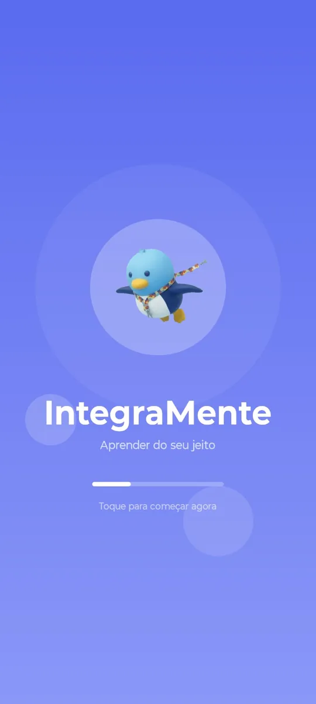
01
Abertura
O mascote recebe o aluno antes de qualquer conteúdo. A mesma tela, na mesma ordem, toda vez que o app abre.
Não criamos apenas softwares. A Iment desenvolve ecossistemas digitais completos que mudam o ambiente de negócios e transformam vidas.
A Iment é uma empresa de soluções tecnológicas que parte de dificuldades reais. Olhamos primeiro para o problema de quem vai usar o sistema — a tecnologia vem depois, como consequência.
Na prática, isso significa três frentes: aplicativos móveis, plataformas web e infraestrutura SaaS. Cada projeto começa por entender o ambiente onde vai viver e termina em um sistema que continua funcionando depois da entrega. É o que "Increase your Environment" quer dizer.
Entender a dificuldade antes de escolher a ferramenta. Software que nasce da tecnologia resolve o que é fácil; software que nasce do problema resolve o que importa.
Arquitetura em camadas, contrato de API definido e base preparada para crescer. Entregar funcionando é o mínimo; continuar funcionando é o objetivo.
Nem toda dificuldade é de negócio. O Integramente existe para demonstrar que a mesma engenharia que escala um produto pode abrir uma porta que estava fechada.
O Integramente é o projeto nº 1 da Iment: o primeiro de uma linha de aplicativos que resolvem dificuldades reais. Cada próximo projeto entra aqui, com o mesmo nível de detalhe.
Aplicativo educacional para estudantes com Transtorno do Espectro Autista, com uma área web de IA para os adultos que acompanham.
A dificuldade Material escolar costuma ser desenhado para quem aprende da forma esperada. Instrução longa, muitos estímulos na mesma tela, nenhuma pista do que vem depois. Para um estudante com Transtorno do Espectro Autista, isso não é um detalhe de interface — é a barreira.
O que construímos Um aplicativo educacional que organiza o conteúdo em matérias, tópicos e questões, apresenta uma tarefa por vez e mantém a navegação sempre no mesmo lugar. Com opções para o estudante ajustar a apresentação ao que funciona para ele.
Contexto Desenvolvido no Curso Técnico de Informática do Instituto Educacional Raphael Di Santo, com orientação do professor Michael do Amaral Yansen.
O percurso que a criança faz toda vez que abre o app — sempre na mesma ordem, sempre com as mesmas pistas do que vem depois.

O mascote recebe o aluno antes de qualquer conteúdo. A mesma tela, na mesma ordem, toda vez que o app abre.
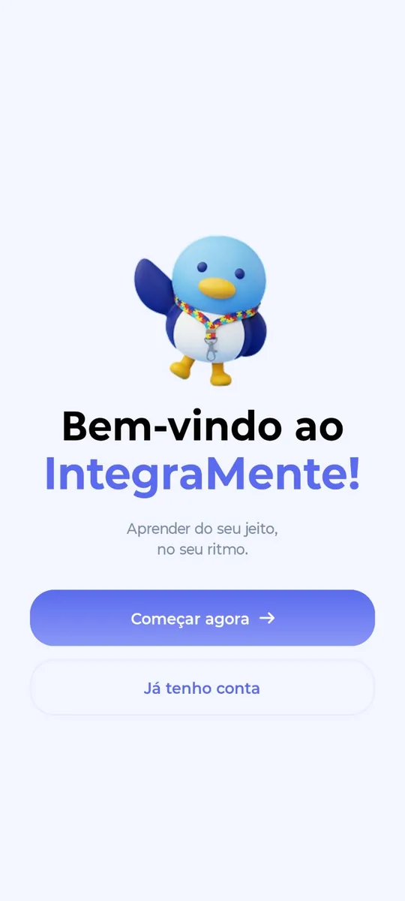
Duas escolhas, nada além disso. O percurso começa aqui e o progresso fica guardado no servidor.
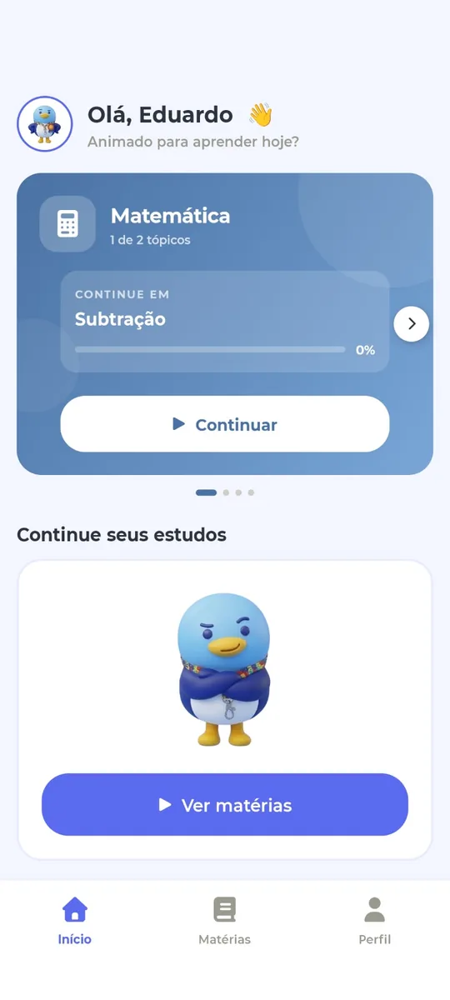
A tela inicial mostra a matéria em andamento e o tópico exato onde o aluno parou. Retomar é um toque, não uma busca.
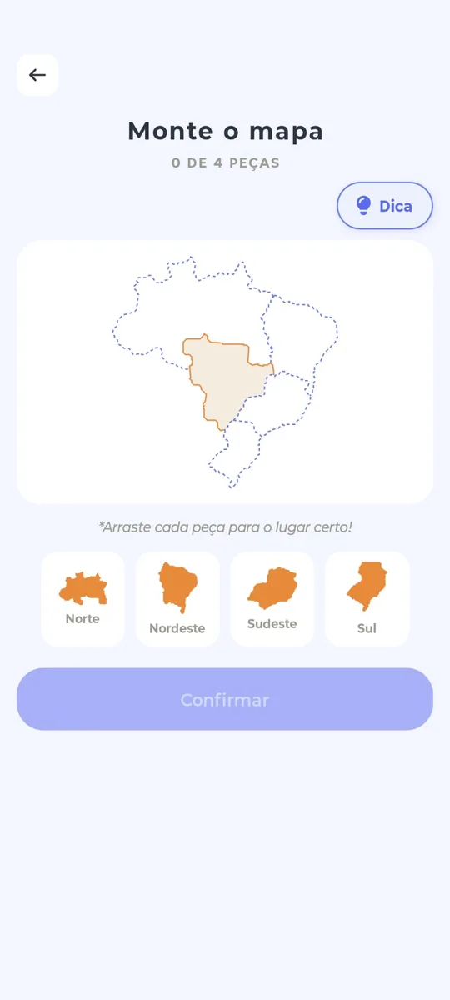
Uma das quatro modalidades: pontos, formas no mapa, letras e grupos. O aluno manipula os elementos em vez de só escolher uma alternativa.
Matérias, tópicos e questões. Uma tarefa por vez, com o caminho sempre visível.
Pontos, formas no mapa, letras e grupos — todas por arrastar e soltar.
Tema claro ou escuro e três tamanhos de fonte. A escolha persiste ao reabrir o app.
Síntese de voz lê as orientações, oferecendo uma alternativa ao texto.
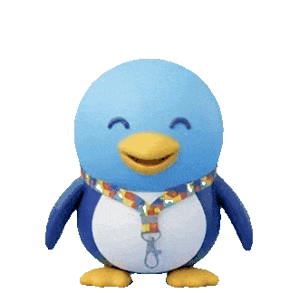
Ele acompanha a criança em todas as telas do Integramente: apresenta a atividade, dá a instrução em linguagem direta e comemora quando ela acerta.
Para quem O app é da criança. O Teo é dos adultos que acompanham: pais, responsáveis e profissionais. É uma aplicação web, aberta a partir do app depois que o adulto digita um PIN — assim as duas experiências não se misturam.
O que ele faz Responde dúvidas sobre autismo com base em uma base de conhecimento curada, citando as fontes. E cria atividades para o app da criança, de forma guiada ou pelo chat.
O limite, dito com todas as letras O Teo não dá diagnóstico, não indica remédio e não substitui terapia. Quando a pergunta sai do que ele sabe, ele diz que não sabe e orienta procurar um profissional. Toda atividade que a IA cria nasce como rascunho: nada chega à criança sem um adulto aprovar.
Da pergunta à atividade aprovada. Tudo o que a IA produz passa por uma pessoa antes de chegar à criança.
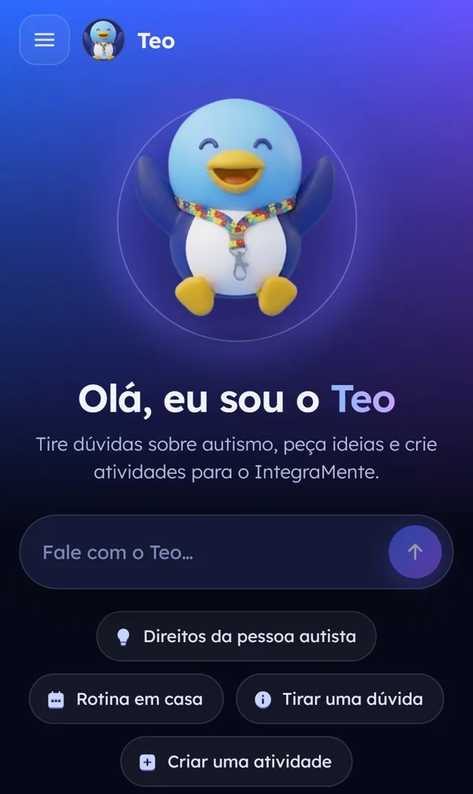
Atalhos para o que mais se pergunta: direitos da pessoa autista, rotina em casa, tirar uma dúvida ou criar uma atividade.
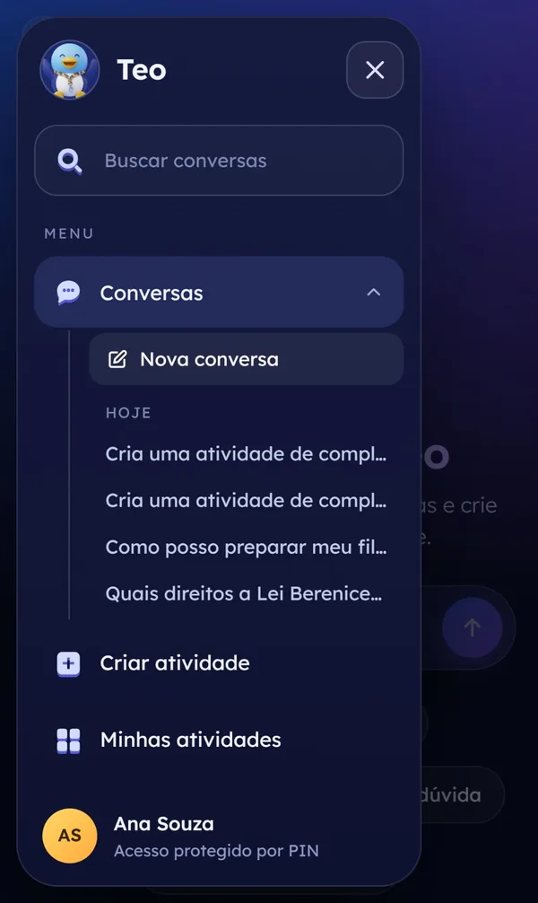
As conversas ficam salvas e agrupadas por data, com busca. No rodapé, o adulto logado e o aviso de que o acesso é protegido por PIN.
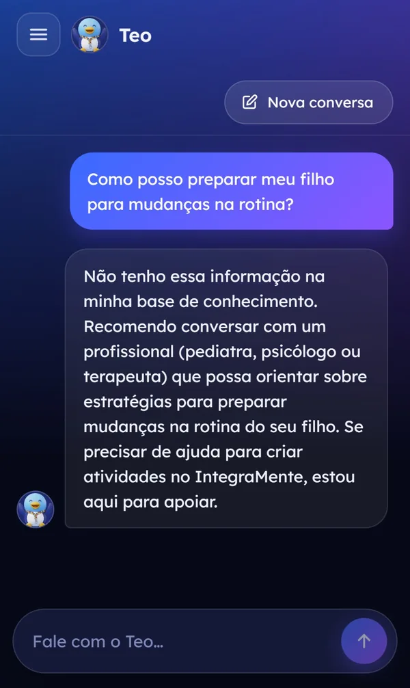
Responde em frases curtas e cita as fontes. Quando a pergunta sai do que ele sabe, ele diz que não sabe — como nesta tela.
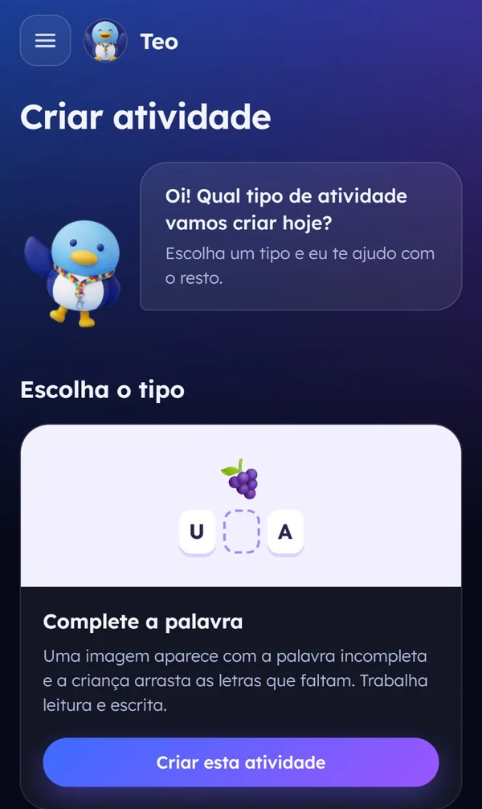
A IA varia o conteúdo, mas não inventa tipos de jogo. Só monta os formatos que o app já sabe exibir, então tudo o que ela cria funciona.
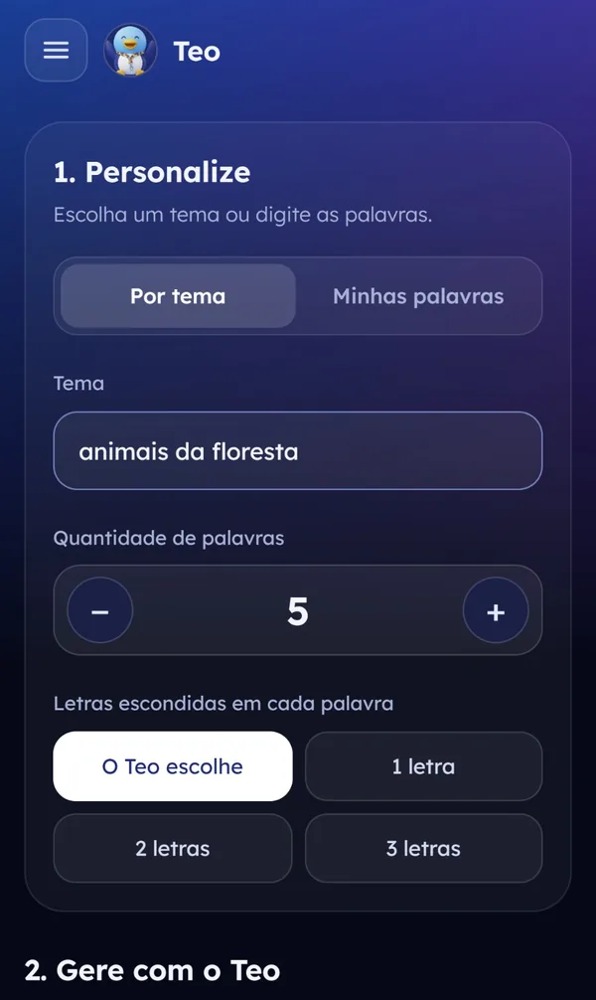
Por tema ou com as palavras do próprio adulto. Ele escolhe quantas palavras e quantas letras ficam escondidas em cada uma.
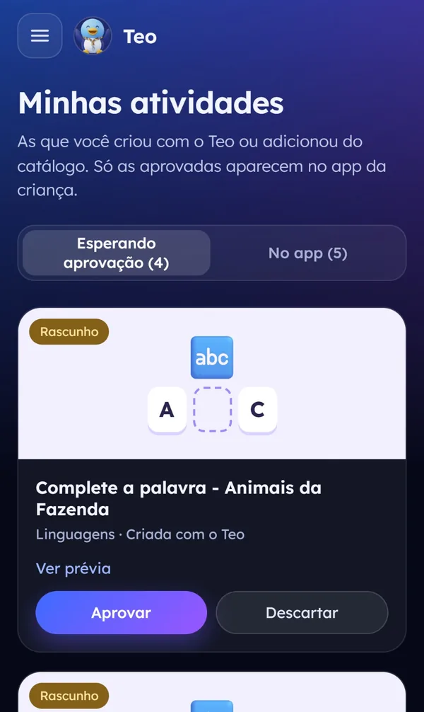
Tudo nasce como rascunho e espera aprovação. É aqui que o adulto vê a prévia e decide se aquilo chega ou não à criança.
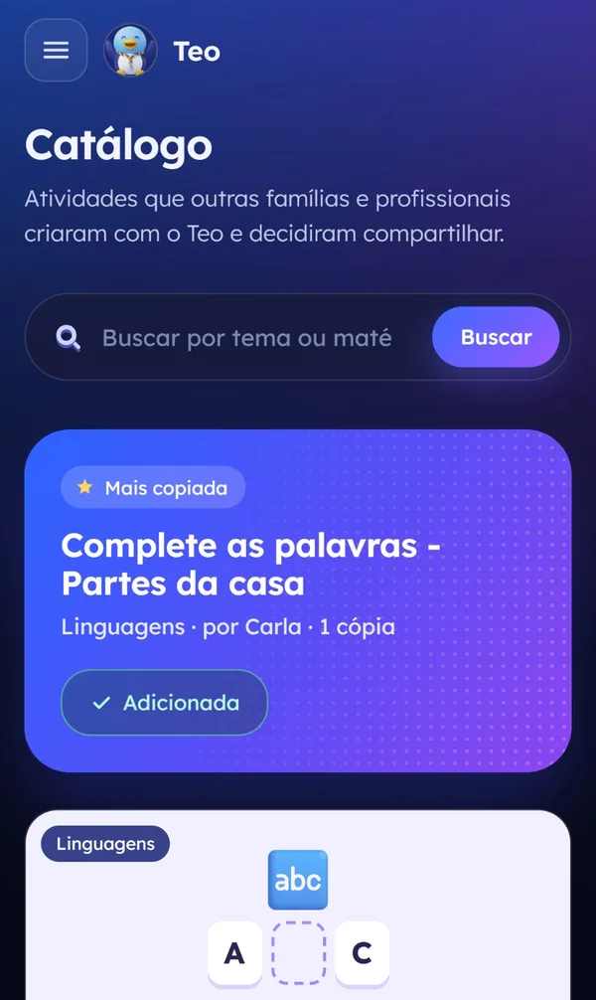
Atividades que outras famílias criaram e decidiram compartilhar. Copiar traz a atividade para a conta, já revisada por quem publicou.
As respostas vêm de documentos revisados, e cada uma cita de onde saiu.
Cinco erros bloqueiam o acesso por dois minutos. A área do adulto não se abre por tentativa e erro.
Ela só age por ferramentas validadas, em nome do adulto, com as mesmas regras da API.
O acesso dura no máximo oito horas após o PIN, e fechar a aba encerra a sessão.
Ainda não existe. Quando existir, ocupa este lugar — mesma estrutura, mesmas partes, mesmas telas reais.
Soluções nativas iOS e Android, fluidas e com design intuitivo. Construídas para reter, engajar e aproximar marcas e usuários.
Sites e sistemas robustos baseados na nuvem, criados para escalar sob demanda sem travamentos ou lentidão.
Modelo SaaS completo: infraestrutura, segurança, atualizações e suporte. Você foca nos resultados, a Iment cuida do resto.
Entendemos o ambiente antes de escrever a primeira linha. Quem usa, o que já existe, o que precisa mudar e o que não deve ser tocado.
Definimos a base que vai sustentar o crescimento: separação em camadas, contrato de API e modelo de dados pensados para durar.
Entregas incrementais, revisadas uma a uma. Cada mudança passa por revisão de código antes de chegar à produção.
Infraestrutura, segurança, atualizações e suporte. O software continua vivo depois da entrega — é aí que o modelo SaaS prova seu valor.
Não vendemos código. Construímos ecossistemas com visão de longo prazo.
Cada site e aplicativo reflete a essência do projeto. Nenhuma solução genérica sai daqui.
Tecnologias de ponta com segurança nativa, preparadas para crescer junto com a demanda.
Não um fornecedor de código. Um parceiro com visão de futuro focado no crescimento real do seu negócio.
Analisamos o cenário do seu negócio ou da sua ideia para indicar o produto do nosso ecossistema SaaS que melhor se adapta. Entre em contato pelo e-mail inovacao@iment.com para iniciar essa conversa.
Criamos e gerenciamos softwares em modelo SaaS: soluções prontas e modulares com implantação rápida e custos otimizados. Cada projeto é personalizado, mas parte de uma base robusta já testada em produção.
O Integramente é o produto SaaS de impacto social da Iment, demonstrando nossa capacidade de criar aplicativos complexos com foco em experiência do usuário e acessibilidade, dentro do mesmo ecossistema tecnológico.
Conecte-se com a Iment e descubra como transformamos ideias inovadoras em ecossistemas reais.